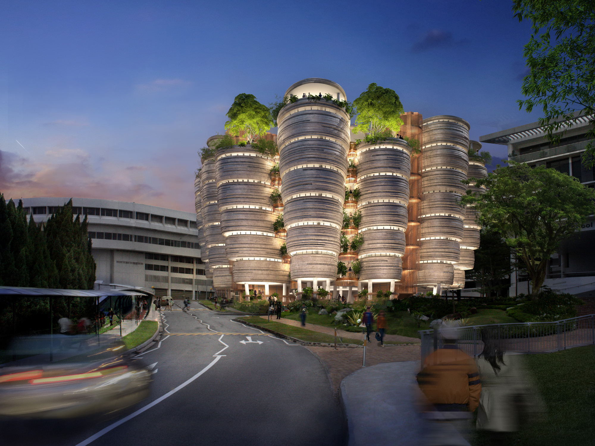
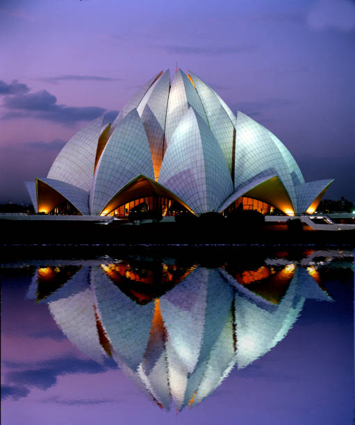

Organic architecture is a type of architectural design wherein buildings are inspired by, built around, and blend in with their natural surroundings. The term organic architecture was coined by the American architect Frank Lloyd Wright. Organic designs do not try to infringe on nature but instead coexist alongside it, creating a composition that celebrates and is in conversation with the natural world. An organic architecture refers to its relationship with nature and unified use of styles and natural materials that create a cohesive whole.

The Hive at Nanyang Technological University in Singapore, Singapore
Learning Hub is a collection of handmade concrete towers surrounding a central space that brings everyone together, interspersed with nooks, balconies and gardens for informal collaborative learning. While visitors may be taken with the outstanding exterior aesthetics, the inside is every bit as organic and harmonious, as well. The rounded classrooms with no clear corners, fronts or backs are a part of the architect’s visualization to make non-conventional classrooms as well. In eliminating forward-facing classrooms with a clear hierarchy, the designer creates a space where students and teachers can meet on a more equal and correlative space. The space takes obvious inspiration from the natural world, referencing bee hives as well as tree groves.

Lotus Temple in New Delhi, India
Shaped like a giant lotus flower, this modern architectural wonder was designed by Iranian-Canadian architect Fariborz Sahba. The building is a nine-sided circular shape made up of 27 free-standing marble clad 'petals' arranged in clusters of three. According to the architect, the Lotus flower represented by the form of the building represents that idea that 'out of the murky waters of our collective history of ignorance and violence, mankind will arise to inhabit a new age of peace and universal brotherhood'.
Sheats-Goldstein Residence in Los Angeles, California
The building was designed from the inside to the outside, a home-cave that opens to embrace nature and view. The house is an example of organic architecture that derives its form as an extension of the natural environment and the person for whom it was built. The space was distributed in 5 bedrooms, 4 bathrooms and a living room completely open to the terrace, protected only by a forced air curtain that extends inside to the outdoors, blurring the line between interior and exterior.